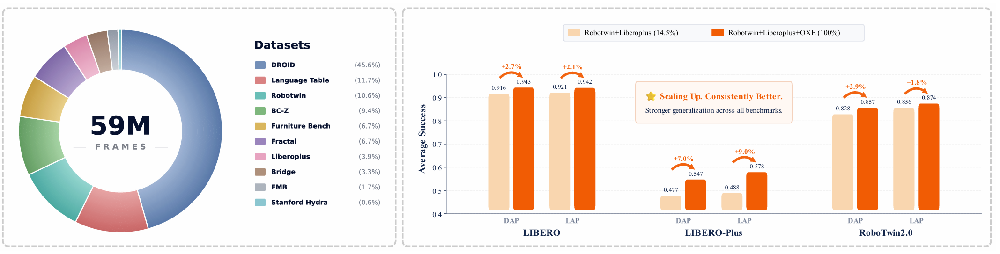
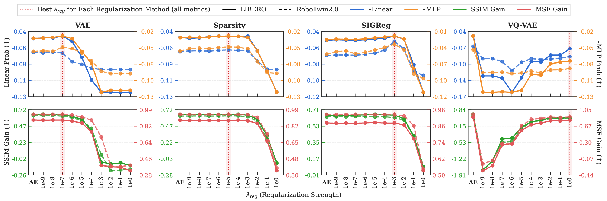
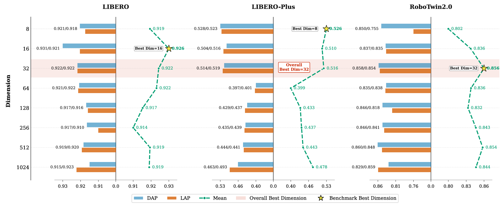
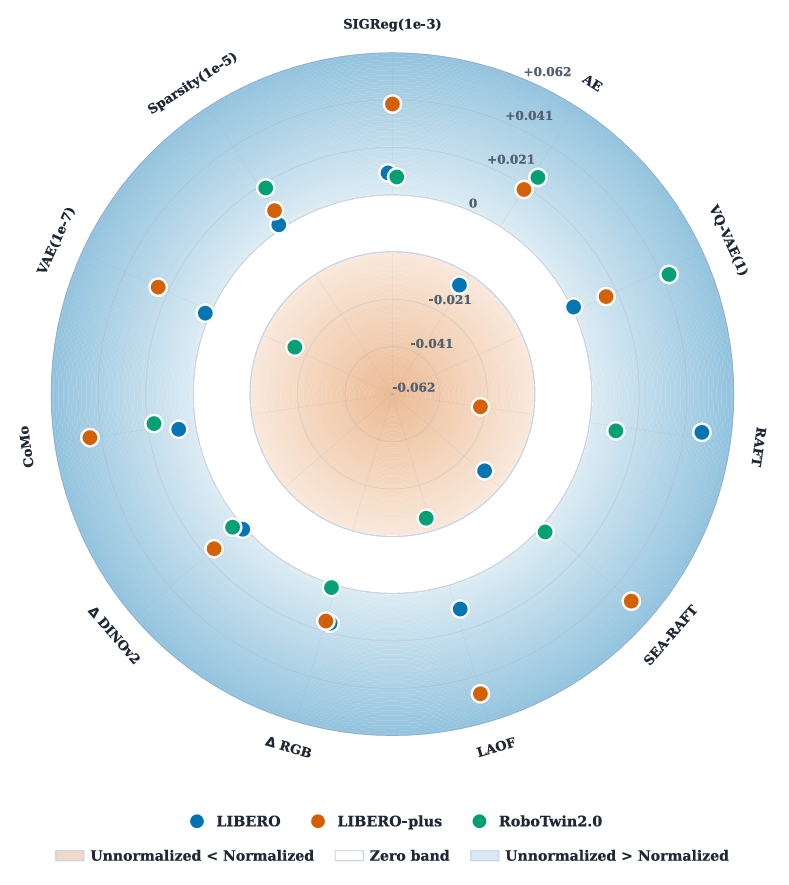

Latent Action Models (LAMs) have emerged as a promising paradigm for leveraging large-scale unlabeled videos in robot learning by learning latent action representations that serve as a compact surrogate for physical actions. Despite rapid progress, research on LAMs remains highly fragmented, with existing methods evaluating different design choices in isolation under inconsistent experimental settings, making it difficult to identify the factors that truly determine downstream robotic manipulation performance. In this work, we present the first comprehensive empirical study of latent action learning for robotic manipulation. We unify representative LAM methods within a common autoencoding framework and systematically investigate key design choices, including latent action modeling paradigms, learning objectives and regularization methods, the integration of latent actions into physical action prediction, as well as latent action dimensionality and normalization. We further examine whether commonly used proxy metrics reliably evaluate latent action quality. Extensive experiments in both simulation and real-world settings reveal several practical insights into effective latent action learning and show that fine-tuning vision-language model (VLM) backbones with latent actions provides a stronger initialization for downstream policy learning.
Latent Action Modeling Paradigms
We show that under mixed-data pretraining, the original LAPO method remains a remarkably strong baseline. We further find that simple semantic feature differencing using off-the-shelf visual encoders is sufficient to learn competitive latent action representations.
Learning Objectives and Physical Action Prediction
We identify effective hyperparameter settings for different regularization methods, showing that properly tuned methods achieve comparable downstream performance. We evaluate five physical action prediction architectures and derive practical design guidelines for integrating latent actions into downstream policy learning.
Latent Action Dimensionality and Normalization
We show that a latent action dimensionality of 32 consistently achieves the best overall performance across both 7-DoF single-arm and 14-DoF dual-arm robot platforms. Additional latent action normalization is unnecessary when appropriate pretraining regularization is applied.
Proxy Metrics for Latent Action Quality
We find that FDM reconstruction metrics provide more reliable proxy measures of latent action quality than probe metrics. These proxy metrics are better suited for coarse-grained model selection than for fine-grained model ranking.
Scaling Laws of Latent Action Pretraining
We demonstrate through both simulation and real-world experiments that fine-tuning VLM backbones with latent actions provides stronger initialization for downstream policy learning. Scaling up latent action pretraining consistently improves downstream robotic manipulation performance across diverse benchmarks.
The paper evaluates latent action learning across diverse robots and manipulation tasks, connecting self-supervised latent action pretraining to downstream VLA policy learning.
Core message: latent actions can become a scalable bridge from abundant unlabeled video to robot policy learning, but their effectiveness depends on evaluation protocol, representation choice, regularization, action-head design, latent dimensionality, and data scale.
Which proxy should guide model selection?
Forward-dynamics reconstruction better reflects downstream trends than direct MLP decoding of physical actions.
Which design choices are reliable defaults?
LAPO remains a strong baseline; tuned regularization matters; dimension 32 is a robust default across tested robot embodiments.
Does latent-action pretraining scale?
Increasing latent-action data for VLM fine-tuning consistently improves downstream VLA performance under the same downstream training recipe.
The framework studies three key design choices for latent action learning: action modeling paradigms, learning objectives and regularization, and physical action prediction architectures. It follows a three-stage training pipeline: Stage I learns latent actions from unlabeled consecutive video frames, Stage II uses generated latent actions to fine-tune the VLM backbone, and Stage III adapts the resulting representation to downstream robot policy learning with physical action data.


These results summarize the main empirical message of the paper: latent action design matters across representation choice, action-head integration, and video fine-tuning scale. LAPO and semantic frame differencing provide strong latent-action supervision, action heads benefit when latent actions remain involved during downstream policy learning, and scaling Stage-II VLM fine-tuning with more diverse video data consistently improves downstream robotic manipulation.
This table compares latent action designs across LIBERO, LIBERO-Plus, and RoboTwin2.0 under five action-head architectures. It highlights the overall strength of LAPO, the competitiveness of semantic frame differencing such as ΔDINO, and the weaker robustness of optical-flow based representations under perturbations.

Each cell reports the mean score over LIBERO, LIBERO-Plus, and RoboTwin2.0 for a specific combination of consecutive-frame motion representation (or regularization method) and action-head architecture. Darker colors indicate better average performance. DAP and LAP use the Action Inaccessible setting, while JAP, JAP-DAP, and JAP-LAP use the Action Accessible setting where latent actions and physical actions are jointly used to fine-tune the VLM backbone.

This result isolates the effect of Stage-II VLM backbone fine-tuning data scale while keeping Stage-III policy training fixed. Increasing the amount and diversity of video-only latent-action fine-tuning data improves downstream manipulation performance, with the largest gains on benchmarks requiring stronger generalization.

Across LIBERO, LIBERO-Plus, and RoboTwin2.0, LAPO achieves the strongest overall performance, while ΔDINO remains highly competitive and consistently outperforms optical-flow based representations. This suggests that semantic consecutive-frame differences capture action-relevant motion more robustly than pure geometric flow, especially under visual perturbations and distribution shifts.
| Method | DAP | LAP | JAP | JAP-DAP | JAP-LAP | Avg. |
|---|---|---|---|---|---|---|
| RAFT | 0.620 | 0.652 | 0.684 | 0.668 | 0.708 | 0.666 |
| SEA-RAFT | 0.630 | 0.672 | 0.678 | 0.728 | 0.708 | 0.683 |
| ΔRGB | 0.708 | 0.720 | 0.814 | 0.792 | 0.812 | 0.769 |
| ΔDINO | 0.892 | 0.860 | 0.848 | 0.850 | 0.856 | 0.861 |
| CoMo | 0.840 | 0.842 | 0.840 | 0.824 | 0.836 | 0.836 |
| LAOF | 0.790 | 0.770 | 0.786 | 0.768 | 0.764 | 0.776 |
| LAPO | 0.882 | 0.862 | 0.862 | 0.802 | 0.814 | 0.844 |
| Method | DAP | LAP | JAP | JAP-DAP | JAP-LAP | Avg. |
|---|---|---|---|---|---|---|
| RAFT | 0.918 | 0.936 | 0.940 | 0.922 | 0.912 | 0.926 |
| SEA-RAFT | 0.932 | 0.914 | 0.938 | 0.946 | 0.938 | 0.934 |
| ΔRGB | 0.948 | 0.940 | 0.948 | 0.938 | 0.938 | 0.942 |
| ΔDINO | 0.964 | 0.962 | 0.950 | 0.962 | 0.960 | 0.960 |
| CoMo | 0.960 | 0.968 | 0.948 | 0.946 | 0.954 | 0.955 |
| LAOF | 0.962 | 0.936 | 0.958 | 0.948 | 0.960 | 0.953 |
| LAPO | 0.972 | 0.956 | 0.954 | 0.952 | 0.960 | 0.959 |
| Method | DAP | LAP | JAP | JAP-DAP | JAP-LAP | Avg. |
|---|---|---|---|---|---|---|
| RAFT | 0.366 | 0.470 | 0.910 | 0.924 | 0.900 | 0.714 |
| SEA-RAFT | 0.330 | 0.662 | 0.936 | 0.962 | 0.952 | 0.768 |
| ΔRGB | 0.940 | 0.954 | 0.976 | 0.978 | 0.968 | 0.963 |
| ΔDINO | 0.996 | 0.990 | 0.980 | 0.980 | 0.972 | 0.984 |
| CoMo | 0.980 | 0.988 | 0.976 | 0.980 | 0.984 | 0.982 |
| LAOF | 0.962 | 0.954 | 0.976 | 0.974 | 0.976 | 0.968 |
| LAPO | 0.988 | 0.990 | 0.964 | 0.970 | 0.974 | 0.977 |
| Method | DAP | LAP | JAP | JAP-DAP | JAP-LAP | Avg. |
|---|---|---|---|---|---|---|
| RAFT | 0.798 | 0.796 | 0.818 | 0.828 | 0.826 | 0.813 |
| SEA-RAFT | 0.798 | 0.808 | 0.834 | 0.836 | 0.832 | 0.822 |
| ΔRGB | 0.816 | 0.826 | 0.856 | 0.866 | 0.864 | 0.846 |
| ΔDINO | 0.880 | 0.880 | 0.874 | 0.888 | 0.882 | 0.881 |
| CoMo | 0.848 | 0.850 | 0.874 | 0.862 | 0.858 | 0.858 |
| LAOF | 0.842 | 0.834 | 0.860 | 0.864 | 0.868 | 0.854 |
| LAPO | 0.870 | 0.866 | 0.848 | 0.868 | 0.852 | 0.861 |
| Method | DAP | LAP | JAP | JAP-DAP | JAP-LAP | Avg. |
|---|---|---|---|---|---|---|
| RAFT | 0.201 | 0.277 | 0.244 | 0.237 | 0.257 | 0.243 |
| SEA-RAFT | 0.211 | 0.272 | 0.303 | 0.277 | 0.305 | 0.274 |
| ΔRGB | 0.328 | 0.323 | 0.397 | 0.331 | 0.344 | 0.345 |
| ΔDINO | 0.435 | 0.468 | 0.415 | 0.405 | 0.428 | 0.430 |
| CoMo | 0.361 | 0.377 | 0.400 | 0.366 | 0.359 | 0.373 |
| LAOF | 0.275 | 0.257 | 0.305 | 0.308 | 0.356 | 0.300 |
| LAPO | 0.402 | 0.430 | 0.379 | 0.392 | 0.394 | 0.399 |
| Method | DAP | LAP | JAP | JAP-DAP | JAP-LAP | Avg. |
|---|---|---|---|---|---|---|
| RAFT | 0.274 | 0.306 | 0.394 | 0.430 | 0.438 | 0.368 |
| SEA-RAFT | 0.176 | 0.220 | 0.338 | 0.318 | 0.369 | 0.284 |
| ΔRGB | 0.438 | 0.399 | 0.457 | 0.462 | 0.477 | 0.447 |
| ΔDINO | 0.462 | 0.482 | 0.435 | 0.438 | 0.438 | 0.451 |
| CoMo | 0.381 | 0.416 | 0.418 | 0.462 | 0.452 | 0.426 |
| LAOF | 0.330 | 0.328 | 0.489 | 0.462 | 0.496 | 0.421 |
| LAPO | 0.379 | 0.435 | 0.513 | 0.516 | 0.511 | 0.471 |
| Method | DAP | LAP | JAP | JAP-DAP | JAP-LAP | Avg. |
|---|---|---|---|---|---|---|
| RAFT | 0.392 | 0.442 | 0.314 | 0.317 | 0.324 | 0.358 |
| SEA-RAFT | 0.382 | 0.422 | 0.304 | 0.337 | 0.342 | 0.357 |
| ΔRGB | 0.377 | 0.470 | 0.395 | 0.392 | 0.440 | 0.415 |
| ΔDINO | 0.487 | 0.485 | 0.372 | 0.380 | 0.367 | 0.418 |
| CoMo | 0.357 | 0.410 | 0.437 | 0.415 | 0.387 | 0.401 |
| LAOF | 0.342 | 0.299 | 0.372 | 0.384 | 0.369 | 0.353 |
| LAPO | 0.362 | 0.415 | 0.447 | 0.430 | 0.430 | 0.417 |
| Method | DAP | LAP | JAP | JAP-DAP | JAP-LAP | Avg. |
|---|---|---|---|---|---|---|
| RAFT | 0.371 | 0.409 | 0.406 | 0.400 | 0.403 | 0.398 |
| SEA-RAFT | 0.386 | 0.400 | 0.397 | 0.329 | 0.386 | 0.380 |
| ΔRGB | 0.266 | 0.337 | 0.340 | 0.366 | 0.392 | 0.340 |
| ΔDINO | 0.446 | 0.517 | 0.360 | 0.409 | 0.374 | 0.421 |
| CoMo | 0.389 | 0.394 | 0.363 | 0.412 | 0.386 | 0.389 |
| LAOF | 0.354 | 0.257 | 0.380 | 0.354 | 0.360 | 0.341 |
| LAPO | 0.446 | 0.440 | 0.457 | 0.471 | 0.486 | 0.460 |
| Method | DAP | LAP | JAP | JAP-DAP | JAP-LAP | Avg. |
|---|---|---|---|---|---|---|
| RAFT | 0.797 | 0.786 | 0.833 | 0.823 | 0.817 | 0.811 |
| SEA-RAFT | 0.798 | 0.810 | 0.765 | 0.822 | 0.841 | 0.807 |
| ΔRGB | 0.784 | 0.805 | 0.825 | 0.853 | 0.832 | 0.820 |
| ΔDINO | 0.836 | 0.826 | 0.797 | 0.812 | 0.832 | 0.821 |
| CoMo | 0.813 | 0.861 | 0.838 | 0.830 | 0.861 | 0.841 |
| LAOF | 0.849 | 0.799 | 0.802 | 0.843 | 0.827 | 0.824 |
| LAPO | 0.856 | 0.837 | 0.824 | 0.860 | 0.861 | 0.848 |
| Method | DAP | LAP | JAP | JAP-DAP | JAP-LAP | Avg. |
|---|---|---|---|---|---|---|
| RAFT | 0.772 | 0.760 | 0.817 | 0.838 | 0.812 | 0.800 |
| SEA-RAFT | 0.776 | 0.797 | 0.773 | 0.817 | 0.825 | 0.798 |
| ΔRGB | 0.805 | 0.812 | 0.842 | 0.859 | 0.828 | 0.829 |
| ΔDINO | 0.873 | 0.866 | 0.836 | 0.814 | 0.842 | 0.846 |
| CoMo | 0.809 | 0.862 | 0.877 | 0.845 | 0.855 | 0.850 |
| LAOF | 0.847 | 0.821 | 0.821 | 0.843 | 0.844 | 0.835 |
| LAPO | 0.868 | 0.852 | 0.836 | 0.864 | 0.851 | 0.854 |
For continuous latent actions, regularization strength matters more than the specific regularizer: VAE, Sparsity, and SIGReg yield comparable downstream performance once properly tuned. VQ-VAE improves robustness on LIBERO-Plus under distribution shift, but its discrete bottleneck can reduce fine-grained control on LIBERO and RoboTwin2.0, making weak-to-moderate continuous regularization the safest default.
| Method | DAP | LAP | JAP | JAP-DAP | JAP-LAP | Avg. |
|---|---|---|---|---|---|---|
| VAE(1e-7) | 0.872 | 0.850 | 0.846 | 0.822 | 0.838 | 0.846 |
| Sparsity(1e-5) | 0.876 | 0.854 | 0.848 | 0.868 | 0.862 | 0.862 |
| Sigreg(1e-3) | 0.836 | 0.830 | 0.810 | 0.836 | 0.830 | 0.828 |
| AE | 0.886 | 0.874 | 0.830 | 0.848 | 0.822 | 0.852 |
| VQ-VAE(1) | 0.860 | 0.852 | 0.834 | 0.858 | 0.850 | 0.851 |
| Method | DAP | LAP | JAP | JAP-DAP | JAP-LAP | Avg. |
|---|---|---|---|---|---|---|
| VAE(1e-7) | 0.964 | 0.954 | 0.954 | 0.950 | 0.948 | 0.954 |
| Sparsity(1e-5) | 0.956 | 0.962 | 0.956 | 0.946 | 0.934 | 0.951 |
| Sigreg(1e-3) | 0.944 | 0.946 | 0.944 | 0.944 | 0.942 | 0.944 |
| AE | 0.972 | 0.964 | 0.946 | 0.952 | 0.956 | 0.958 |
| VQ-VAE(1) | 0.968 | 0.952 | 0.952 | 0.950 | 0.958 | 0.956 |
| Method | DAP | LAP | JAP | JAP-DAP | JAP-LAP | Avg. |
|---|---|---|---|---|---|---|
| VAE(1e-7) | 0.974 | 0.984 | 0.974 | 0.978 | 0.988 | 0.980 |
| Sparsity(1e-5) | 0.978 | 0.982 | 0.984 | 0.976 | 0.986 | 0.981 |
| Sigreg(1e-3) | 0.984 | 0.992 | 0.976 | 0.976 | 0.986 | 0.983 |
| AE | 0.982 | 0.990 | 0.970 | 0.978 | 0.982 | 0.980 |
| VQ-VAE(1) | 0.986 | 0.970 | 0.984 | 0.974 | 0.974 | 0.978 |
| Method | DAP | LAP | JAP | JAP-DAP | JAP-LAP | Avg. |
|---|---|---|---|---|---|---|
| VAE(1e-7) | 0.872 | 0.862 | 0.846 | 0.866 | 0.848 | 0.859 |
| Sparsity(1e-5) | 0.868 | 0.860 | 0.864 | 0.868 | 0.880 | 0.868 |
| Sigreg(1e-3) | 0.874 | 0.868 | 0.876 | 0.880 | 0.892 | 0.878 |
| AE | 0.872 | 0.870 | 0.858 | 0.846 | 0.854 | 0.860 |
| VQ-VAE(1) | 0.866 | 0.864 | 0.848 | 0.846 | 0.852 | 0.855 |
| Method | DAP | LAP | JAP | JAP-DAP | JAP-LAP | Avg. |
|---|---|---|---|---|---|---|
| VAE(1e-7) | 0.410 | 0.415 | 0.336 | 0.336 | 0.333 | 0.366 |
| Sparsity(1e-5) | 0.400 | 0.400 | 0.392 | 0.384 | 0.387 | 0.393 |
| Sigreg(1e-3) | 0.432 | 0.412 | 0.400 | 0.346 | 0.400 | 0.398 |
| AE | 0.407 | 0.417 | 0.415 | 0.422 | 0.420 | 0.416 |
| VQ-VAE(1) | 0.498 | 0.534 | 0.443 | 0.468 | 0.499 | 0.488 |
| Method | DAP | LAP | JAP | JAP-DAP | JAP-LAP | Avg. |
|---|---|---|---|---|---|---|
| VAE(1e-7) | 0.487 | 0.509 | 0.443 | 0.509 | 0.494 | 0.488 |
| Sparsity(1e-5) | 0.511 | 0.553 | 0.518 | 0.531 | 0.521 | 0.527 |
| Sigreg(1e-3) | 0.504 | 0.533 | 0.521 | 0.562 | 0.555 | 0.535 |
| AE | 0.457 | 0.474 | 0.516 | 0.538 | 0.538 | 0.505 |
| VQ-VAE(1) | 0.560 | 0.555 | 0.518 | 0.521 | 0.553 | 0.541 |
| Method | DAP | LAP | JAP | JAP-DAP | JAP-LAP | Avg. |
|---|---|---|---|---|---|---|
| VAE(1e-7) | 0.452 | 0.475 | 0.405 | 0.417 | 0.405 | 0.431 |
| Sparsity(1e-5) | 0.475 | 0.508 | 0.432 | 0.420 | 0.425 | 0.452 |
| Sigreg(1e-3) | 0.495 | 0.488 | 0.465 | 0.417 | 0.447 | 0.462 |
| AE | 0.462 | 0.455 | 0.402 | 0.422 | 0.387 | 0.426 |
| VQ-VAE(1) | 0.545 | 0.528 | 0.510 | 0.515 | 0.540 | 0.528 |
| Method | DAP | LAP | JAP | JAP-DAP | JAP-LAP | Avg. |
|---|---|---|---|---|---|---|
| VAE(1e-7) | 0.457 | 0.454 | 0.417 | 0.432 | 0.466 | 0.445 |
| Sparsity(1e-5) | 0.497 | 0.543 | 0.492 | 0.469 | 0.511 | 0.502 |
| Sigreg(1e-3) | 0.494 | 0.480 | 0.463 | 0.443 | 0.474 | 0.471 |
| AE | 0.434 | 0.472 | 0.411 | 0.414 | 0.443 | 0.435 |
| VQ-VAE(1) | 0.546 | 0.517 | 0.506 | 0.486 | 0.494 | 0.510 |
| Method | DAP | LAP | JAP | JAP-DAP | JAP-LAP | Avg. |
|---|---|---|---|---|---|---|
| VAE(1e-7) | 0.838 | 0.883 | 0.858 | 0.872 | 0.851 | 0.860 |
| Sparsity(1e-5) | 0.816 | 0.845 | 0.788 | 0.833 | 0.838 | 0.824 |
| Sigreg(1e-3) | 0.815 | 0.836 | 0.817 | 0.861 | 0.854 | 0.837 |
| AE | 0.824 | 0.840 | 0.850 | 0.868 | 0.844 | 0.845 |
| VQ-VAE(1) | 0.807 | 0.803 | 0.807 | 0.808 | 0.837 | 0.812 |
| Method | DAP | LAP | JAP | JAP-DAP | JAP-LAP | Avg. |
|---|---|---|---|---|---|---|
| VAE(1e-7) | 0.838 | 0.867 | 0.862 | 0.868 | 0.853 | 0.858 |
| Sparsity(1e-5) | 0.828 | 0.842 | 0.802 | 0.862 | 0.854 | 0.838 |
| Sigreg(1e-3) | 0.818 | 0.857 | 0.840 | 0.868 | 0.843 | 0.845 |
| AE | 0.832 | 0.847 | 0.867 | 0.878 | 0.868 | 0.858 |
| VQ-VAE(1) | 0.815 | 0.794 | 0.852 | 0.833 | 0.852 | 0.829 |
The purple and red panels report Pearson correlation and Spearman correlation, respectively. The Regularization Methods setting computes correlations over AE plus VAE, Sparsity, SIGReg, and VQ-VAE configurations under different regularization strengths, while the + Latent Action Dimensionality setting further adds configurations with different latent dimensions. LIBERO DAP/LAP and RoboTwin2.0 DAP/LAP denote downstream evaluations with different action heads, and -Linear Prob, -MLP Prob, SSIM Gain, and MSE Gain are the four proxy metrics used to assess latent action quality.

This result shows that regularization strength controls the balance between preserving transition dynamics and imposing latent-space structure. Overly strong regularization suppresses action-relevant motion information, so weak-to-moderate settings are preferred for continuous latent actions.

This training-process view tracks proxy metrics over Stage-I latent action learning. It shows that latent representations become progressively more action-relevant during training, while different regularizers shape the trade-off between physical-action recoverability and future-frame reconstruction quality.

This ablation studies how much latent capacity is needed for robot control. Compact dimensions can be sufficient for saturated single-arm benchmarks, but dual-arm manipulation needs more capacity; overall, a latent action dimension around 32 provides the best trade-off across platforms.

This figure compares downstream performance with and without latent action normalization. When the latent space is already properly regularized, preserving the original latent scale often improves performance, suggesting that magnitude information can remain useful for policy learning.

We further evaluate whether latent-action representations transfer from the controlled benchmark setting to physical robot manipulation. The real-world experiments cover successful execution across four tasks, robustness under external disturbances, and representative failure cases. Together, these videos show that latent actions can provide a useful motion-centric initialization for downstream policies while also exposing remaining challenges in recovery, precision, and out-of-distribution interaction.
Latent actions are deployed across five real-world manipulation experiments and complete them successfully.
OpenVLA-OFT (LA-Tuned)
Close Drawer
OpenVLA-OFT (LA-Tuned)
Disturbance Recovery
OpenVLA-OFT (LA-Tuned)
Open Drawer
OpenVLA-OFT (LA-Tuned)
Place Block
OpenVLA-OFT (LA-Tuned)
Stack Bowls
OpenVLA-OFT
Close Drawer
OpenVLA-OFT
Disturbance Recovery
OpenVLA-OFT
Open Drawer
OpenVLA-OFT
Place Block
OpenVLA-OFT
Stack Bowls
Contribution details will be updated after the author order and affiliations are finalized.
@article{bu2026whatmatters,
title={What Matters for Latent Actions in Robot Learning},
author={Bu, Xizhou and Hu, Qingda and Zhou, Lei and Zhang, Lingfeng and Tang, Yingbo and Liu, Zihao and Tao, Xinyi and Ma, Zhiqiang and Huang, Qingqiu and Tang, Chufeng and Wang, Hongbo and Zhang, Jing and Ma, Jiayi and Ye, Hangjun and Li, Wei and Hao, Xiaoshuai},
journal={arXiv preprint},
year={2026}
}